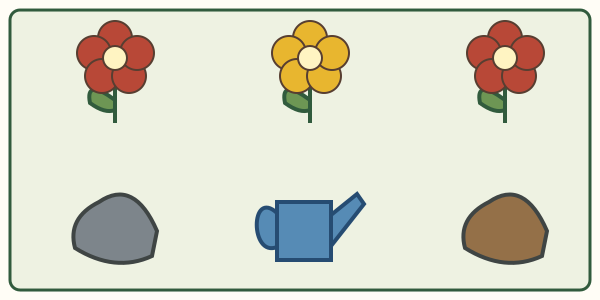
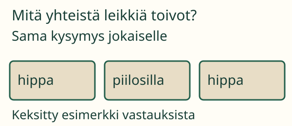

Aava suunnittelee pihan kukkakarttaa. Hän haluaa tietää: minkä värisiä kukkia tämän kuvan pihassa on?
Kysymys kertoo, mitä kerätään
Tavoitteesi: Keräät sovittuun aiheeseen kuuluvat havainnot. Jätät muut asiat pois.
Katsotaan koko sovittu alue. Jokaisesta sen kukasta tehdään yksi havaintokortti. Kortti kertoo kukan värin. Kivet ja kastelukannu eivät kuulu tähän kysymykseen.
1. Kaikki kukat, ei vain suosikkia

Myös keltainen kukka kuuluu listaan. Punaisesta kukasta ei tehdä kahta korttia, vaikka katsot sitä uudelleen.
Jos Aava kirjaa vain punaiset kukat, osa tiedosta puuttuu. Jos hän kirjaa kannun, listalla on tietoa eri aiheesta. Aihe ja alue sovitaan ennen keräämistä.
2. Kysy sama asia kaikilta

Kun halutaan tietää ryhmän toivoma leikki, kysytään jokaiselta sama kysymys. Jokaiselta kirjataan yksi vastaus. Vain yhden kaverin vastaus ei kerro koko ryhmän toivetta.
Ennusta: Jos aihe vaihtuu kivien väreihin, kuuluuko kukka enää samalle listalle?
Katso ajatus
Ei. Uuteen kysymykseen kerätään kivien havaintokortit. Kukkalista vastaa eri kysymykseen.
Kerää oma havaintolista
Valitse kuvan aiheeseen sopivat kohteet. Valittu kortti tulee listaan. Uusi painallus poistaa kortin.
Lisäpohdinta
Kuvan lista kertoo vain tästä kuvasta. Se ei kerro koko kaupungin kukista. Mitä pitäisi sopia, jos tutkisit oikeaa pihaa?
Opettajalle ja ilman ruutua
Luokat 1–2. Sopikaa todellinen kysymys, rajattu alue ja havaintoyksikkö. Esimerkiksi: minkä värisiä luokan kynät ovat tässä rasiassa? Lapsi siirtää jokaisesta kynästä yhden värikortin sivuun; aikuinen auttaa nimeämisessä. Älä vaihda aihetta kesken keruun. Kyselyssä sovi, keiltä kysytään ja että jokaiselta saadaan yksi vastaus. Kaikkia vastauksia ei tarvitse pakottaa kahteen ennalta valittuun luokkaan.
M-WORK-01 on vahva process_support, ei pakollinen portti. Nimiä ei kysytä, korttien lukumäärää tai viisiryhmittelyä ei testata. Valitut kohteet synnyttävät havaintokortit, joten toiminta harjoittaa keruuta annetusta kuvasta. Se ei todenna itsenäisen tutkimuksen suunnittelua, oikean pihan havainnointia tai todellista kyselyä. Kyselyn vastaukset ovat keksitty esimerkki. Listat ovat vain tämän harjoituksen muistissa; niitä ei tallenneta.
Lähtökysymys: Mitkä kaksi asiaa sovit ennen kuin alat kerätä havaintoja?
Lähtökysymyksen ajatus
Mitä haluamme tietää, ja mistä tai keneltä tieto kerätään?
 Aava suunnittelee pihan kukkakarttaa. Hän haluaa tietää: minkä värisiä kukkia tämän kuvan pihassa on?
Aava suunnittelee pihan kukkakarttaa. Hän haluaa tietää: minkä värisiä kukkia tämän kuvan pihassa on?